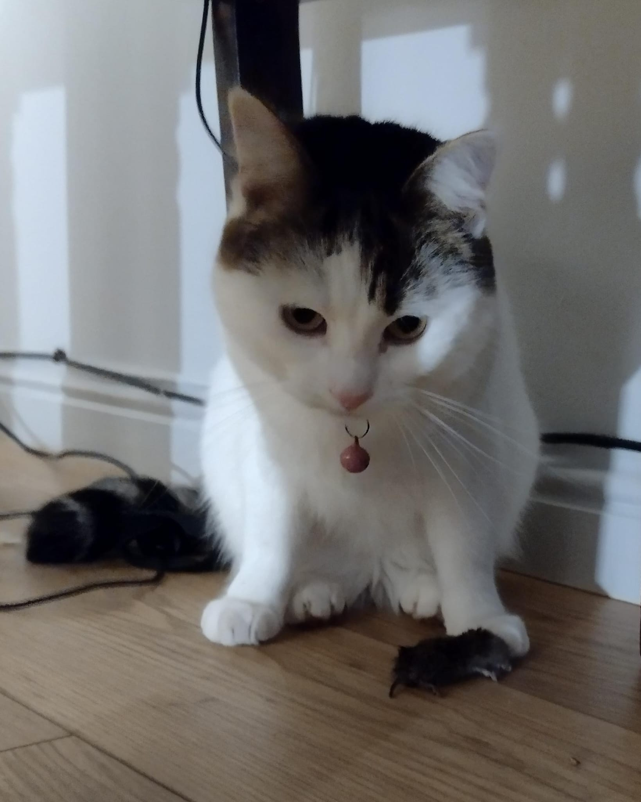
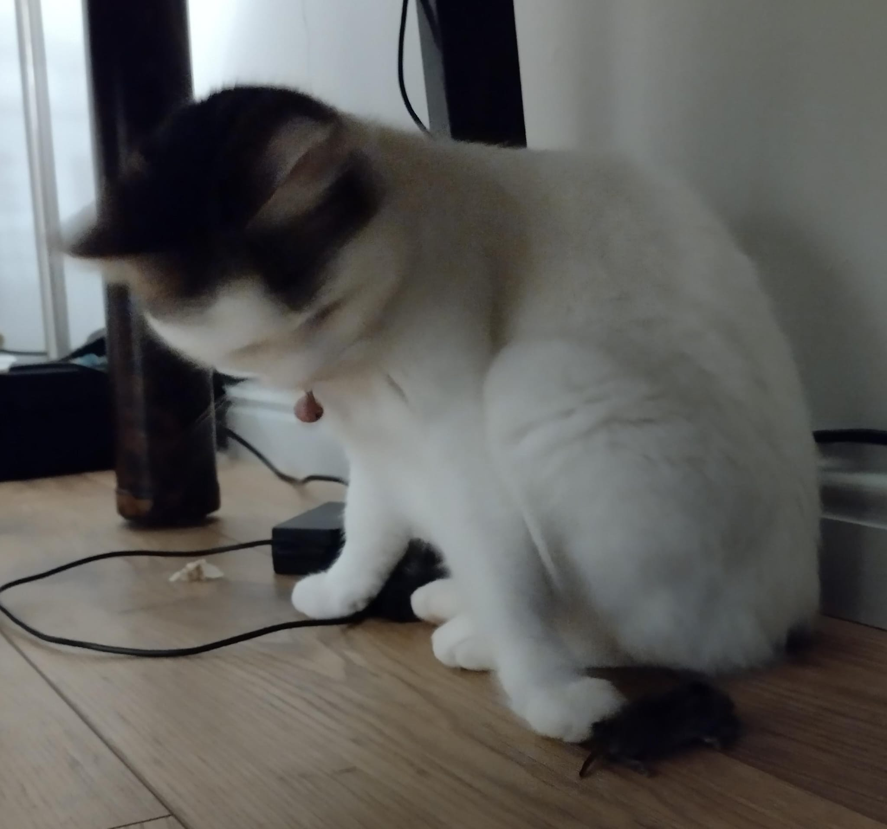
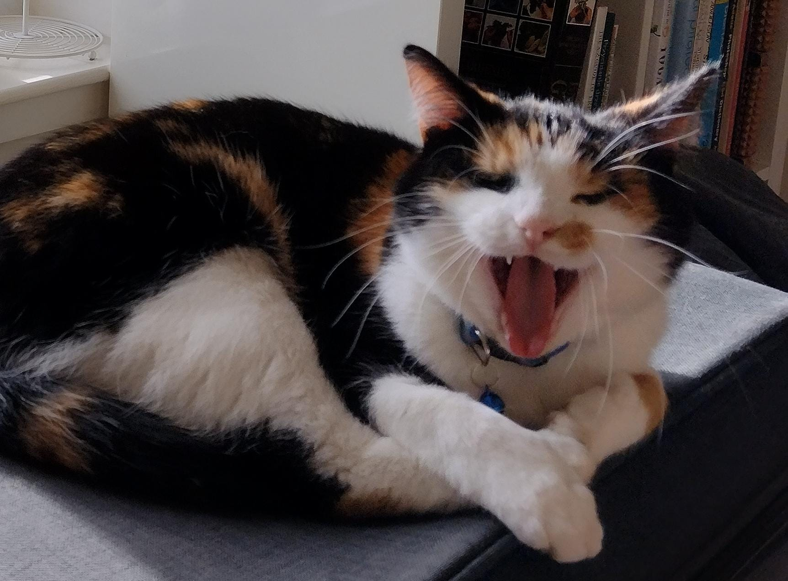

In proving foresight may be vain;
In proving foresight may be vain;
 But, Mousie, thou art no thy-lane,
In proving foresight may be vain;
 The best-laid schemes o' mice an' men
The best-laid schemes o' mice an' men
 Gang aft agley,
 An' lea'e us nought but grief an' pain,
An' lea'e us nought but grief an' pain,
 For promis'd joy!
For promis'd joy!
 It's... It was a shrew...
It's... It was a shrew...
 And now for something completely the same!
And now for something completely the same!
 Ladies and gentlemen! Sir Billy Connolly!!!
Thank ye, Mortka!
Małysz, it wis very guid. Here is ma tak.
The fou version.
The above fragment starts at 1:30.